Home / 2027 Expos
Find your 2027 trade show
102 major shows in 21 countries. Filter by what you source, where and when, then let us plan the trip.
- 102expos listed
- 21countries
- 46host cities
- 12industries
2027 at a glance
- Bar length: all of 2027
- Number: matches your filters
- Tap a bar to filter
6–9 Jan 2027Dates confirmed
CES 2027
Distributors and retailers of gadgets, appliances and smart-home products can source new brands and lines a year ahead of the Philippine market.
Las Vegas, USA · Las Vegas Convention Center
Sectors: Consumer electronics, smart home, IoT, automotive tech
10–12 Jan 2027Dates confirmed
NRF 2027: Retail's Big Show
Philippine mall operators, retail chains and POS integrators can see the latest store tech and omnichannel tools in one place.
New York, USA · Jacob K. Javits Convention Center
Sectors: Retail technology, POS, store design, e-commerce
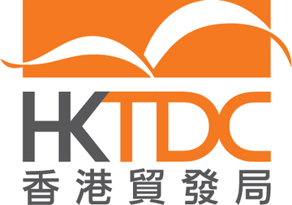
11–14 Jan 2027Dates confirmed
HKTDC Hong Kong Toys & Games Fair
Asia’s January toy sourcing event, ahead of the Canton Fair, for toy importers and retailers planning the year.
Hong Kong, Hong Kong · HKCEC
Sectors: Toys, games, hobby, educational and licensed products

11–14 Jan 2027Dates confirmed
HKTDC Hong Kong Baby Products Fair
Runs alongside the Toys Fair, so baby and kids retailers cover both in one Hong Kong trip.
Hong Kong, Hong Kong · HKCEC
Sectors: Baby and maternity products, nursery, feeding, strollers
12–15 Jan 2027Dates confirmed
Heimtextil 2027
Hotel buyers and home-textile importers can source linen and fabrics, and Philippine weavers can meet global buyers.
Frankfurt, Germany · Messe Frankfurt
Sectors: Home and contract textiles, bedding, curtains, hotel linen
12–14 Jan 2027Dates confirmed
Intersec 2027
Security and fire-protection distributors and contractors can source CCTV, access-control and fire systems for Philippine building projects.
Dubai, UAE · Dubai World Trade Centre
Sectors: Security, fire safety, CCTV, access control
14–18 Jan 2027Dates confirmed
Maison&Objet Paris (January 2027)
Philippine furniture and handicraft exporters (Cebu, Pampanga) showcase here, and decor retailers spot the season's trends.
Paris, France · Paris Nord Villepinte
Sectors: Home decor, design, furniture, lifestyle, hospitality projects
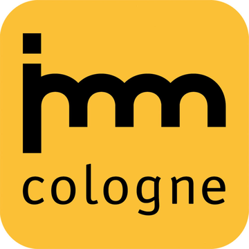
19–22 Jan 2027Dates confirmed
imm cologne 2027
Furniture importers and exporters can meet European brands and buyers at one of the main furniture fairs.
Cologne, Germany · Koelnmesse
Sectors: Furniture and interiors
25–28 Jan 2027Dates confirmed
World Health Expo (WHX) Dubai 2027
Hospital buyers and medical-equipment distributors can source devices and lab equipment from thousands of global makers.
Dubai, UAE · Dubai Exhibition Centre, Expo City Dubai
Sectors: Medical devices, hospital equipment, lab, healthcare (formerly Arab Health)
29–2 Jan–Feb 2027Dates confirmed
Ambiente / Christmasworld / Creativeworld 2027
Gift, houseware and hotel-supply buyers can source widely, and Philippine Christmas-decor and handicraft exporters can find buyers.
Frankfurt, Germany · Messe Frankfurt
Sectors: Tableware, kitchenware, gifts, home decor, seasonal decorations, hotel supplies
16–18 Feb 2027Dates confirmed
MAGIC Las Vegas (February 2027)
Garment manufacturers and fashion retailers can meet US brands and sourcing buyers.
Las Vegas, USA · Las Vegas Convention Center
Sectors: Apparel, footwear, accessories, sourcing
1–4 Mar 2027Dates confirmed
East China Import and Export Commodity Fair (35th)
East China’s largest regional export fair, for garment and household-goods sourcing before the spring Canton Fair.
Shanghai, China · Shanghai New International Expo Centre
Sectors: Garments, textiles, home textiles, housewares, gifts, decorations
1–4 Mar 2027Dates confirmed
Malaysian International Furniture Fair (MIFF) 2027
A nearby ASEAN sourcing hub where Philippine furniture importers and retailers can buy value-for-money export furniture.
Kuala Lumpur, Malaysia · MITEC & World Trade Centre Kuala Lumpur
Sectors: Export furniture, home furnishings
2–6 Mar 2027Dates confirmed
AAHAR 2027 – International Food & Hospitality Fair
Food importers and HoReCa buyers can source Indian rice, spices and kitchen equipment, and meet a large South Asian market.
New Delhi, India · Bharat Mandapam
Sectors: Food processing, hospitality equipment, F&B

4–8 Mar 2027Dates confirmed
HKTDC Hong Kong International Jewellery Show
A major jewellery trading fair for jewellers and retailers who source gold, silver and gem pieces.
Hong Kong, Hong Kong · HKCEC
Sectors: Finished jewellery, diamonds, gems, pearls, packaging
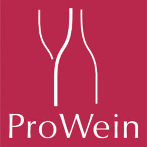
7–9 Mar 2027Dates confirmed
ProWein 2027
Wine and spirits importers and hotel and restaurant beverage buyers can meet producers from every major wine country.
Düsseldorf, Germany · Messe Düsseldorf
Sectors: Wine and spirits
8–11 Mar 2027Dates confirmed
VIFA EXPO 2027
Vietnam is the region's top furniture exporter, so this is a key place for Philippine importers to source.
Ho Chi Minh City, Vietnam · SECC / WTC Expo & Sky Expo
Sectors: Furniture, home accessories, handicrafts
9–12 Mar 2027Dates confirmed
FOODEX JAPAN 2027
Philippine food exporters (dried mango, coconut, seafood) can reach Japanese importers, and food buyers can source Japanese products.
Tokyo, Japan · Tokyo Big Sight
Sectors: Food and beverage
10–12 Mar 2027Dates confirmed
Intertextile Shanghai Apparel Fabrics, Spring
For garment makers and fashion brands sourcing fabrics and trims.
Shanghai, China · NECC Shanghai
Sectors: Apparel fabrics, accessories, yarns, sustainable textiles
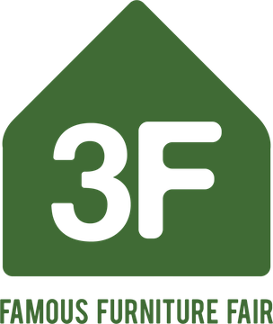
15–19 Mar 2027Dates expected
International Famous Furniture Fair (Dongguan)
A factory-direct furniture fair in the Pearl River Delta that pairs with CIFF Guangzhou the same week.
Dongguan, China · Guangdong Modern International Exhibition Center
Sectors: Home furniture, sofas, bedroom, dining, soft furnishings
15–19 Mar 2027Dates confirmed
ISH 2027
Plumbing, sanitary-ware and HVAC distributors and contractors can source for condo, hotel and commercial projects.
Frankfurt, Germany · Messe Frankfurt
Sectors: Bathroom, plumbing, HVAC, water and energy
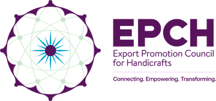
15–19 Mar 2027Dates confirmed
IHGF Delhi Fair – Spring 2027
Gift, decor and home-textile retailers can source handmade Indian goods at export prices.
Greater Noida (Delhi NCR), India · India Expo Centre & Mart
Sectors: Handicrafts, gifts, home decor, furniture, textiles
15–19 Mar 2027Dates confirmed
Gulfood 2027
The biggest F&B sourcing show in the Middle East, where Philippine food and halal exporters can reach GCC buyers and the Filipino diaspora market.
Dubai, UAE · Dubai World Trade Centre & Expo City Dubai
Sectors: Food and beverage, halal food
16–19 Mar 2027Dates expected
China Xiamen International Stone Fair (27th)
The world’s largest stone fair: granite, marble and quartz for contractors and developers.
Xiamen, China · Xiamen International Conference & Exhibition Center
Sectors: Natural and engineered stone, slabs, stone machinery, tools

2027 18–21 Mar 2027 (home); 28–31 Mar (office)Dates expected
China International Furniture Fair (Guangzhou)
Asia’s largest furniture fair, the core trip for furniture retailers, hotel fit-out firms and interior designers.
Guangzhou, China · Canton Fair Complex, Pazhou
Sectors: Home, outdoor and office furniture, decor, hotel furniture
18–21 Mar 2027Dates confirmed
Cosmoprof Worldwide Bologna 2027
Beauty distributors, salon chains and private-label brands can source cosmetics, packaging and contract manufacturing.
Bologna, Italy · BolognaFiere
Sectors: Cosmetics, beauty, packaging, salon
19–26 Mar–Sep 2027Dates confirmed
GREEN×EXPO 2027 (International Horticultural Expo, Yokohama)
A six-month BIE-recognised expo with country pavilions, useful for agri-food, landscaping and green-building networking in Japan.
Yokohama, Japan · Former Kamiseya site (Asahi & Seya wards)
Sectors: Horticulture, agriculture, green technology, food
2027 Early–mid March 2027Dates expected
China (Guangzhou) International Beauty Expo, Spring
China’s biggest beauty supply-chain show, a direct OEM and private-label source for beauty and salon brands.
Guangzhou, China · Canton Fair Complex, Pazhou
Sectors: Cosmetics, skincare, salon and spa equipment, OEM/ODM, packaging
2027 Late March 2027Dates expected
China Food & Drinks Fair (Chengdu, spring)
China’s largest food and drink trading fair, for exporters of coconut, dried fruit and beverages looking for distributors.
Chengdu, China · Western China International Expo City
Sectors: Wine, spirits, beverages, packaged foods, condiments
2027 27 Mar–5 Apr 2027Dates confirmed
Beijing Auto Show 2027 (specialised edition)
An extra window for auto dealers and EV importers before Auto Shanghai.
Beijing, China · China International Exhibition Center (Shunyi)
Sectors: NEVs, smart mobility, auto parts
28–31 Mar 2027Dates confirmed
interzum guangzhou
Runs with CIFF office furniture, so furniture makers source machinery, fittings and panels in one trip.
Guangzhou, China · Canton Fair Complex, Pazhou
Sectors: Woodworking machinery, furniture components, hardware, upholstery
2027 30 Mar–2 Apr 2027Dates confirmed
HOTELEX Shanghai (35th)
China’s largest hospitality supply show, for hotels, restaurants and HORECA distributors.
Shanghai, China · NECC Shanghai
Sectors: Hotel and restaurant equipment, kitchen, coffee, bakery, tableware
5–7 Apr 2027Dates confirmed
IFE 2027 – International Food & Drink Event
Philippine food exporters can reach UK retailers and importers, including the large Asian-food channel.
London, UK · ExCeL London
Sectors: Food and drink, specialty and ethnic foods
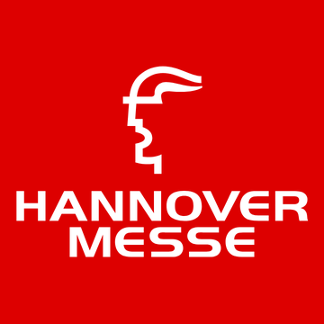
5–8 Apr 2027Dates confirmed
HANNOVER MESSE 2027
Manufacturers and industrial distributors can see automation, robotics and energy tech for Philippine factories and economic zones.
Hannover, Germany · Hannover Exhibition Grounds
Sectors: Industrial automation, energy, digital manufacturing
9–12 Apr 2027Dates expected
China International Medical Equipment Fair, Spring
Asia’s largest medical equipment fair, for hospitals and medical device distributors.
Shanghai, China · NECC Shanghai
Sectors: Medical devices, imaging, IVD, hospital equipment, consumables
10–14 Apr 2027Dates confirmed
High Point Market – Spring 2027
The main US furniture market, where Philippine furniture and handicraft exporters can meet US retail buyers.
High Point, NC, USA · High Point Market showrooms
Sectors: Home furnishings, furniture, decor

13–16 Apr 2027Dates confirmed
HKTDC Hong Kong Electronics Fair, Spring
Overlaps Canton Fair Phase 1: the classic Hong Kong and Guangzhou electronics combination.
Hong Kong, Hong Kong · HKCEC
Sectors: Consumer electronics, smart home, AI devices, components
13–16 Apr 2027Dates expected
CHINAPLAS 2027
Asia’s top plastics show, in Shenzhen in 2027, for packaging and plastics manufacturers buying equipment.
Shenzhen, China · Shenzhen World Exhibition & Convention Center
Sectors: Plastics and rubber machinery, materials, moulds, recycling
13–18 Apr 2027Dates expected
China International Consumer Products Expo (7th)
Filipinos can enter Hainan visa-free for 30 days, and the expo opens China’s duty-free market to premium goods.
Haikou, China · Hainan International Convention and Exhibition Center
Sectors: Premium consumer goods, food, beauty, fashion, duty-free retail
13–18 Apr 2027Dates confirmed
Salone del Mobile.Milano 2027 (with Euroluce)
The world's top design fair, useful for high-end furniture exporters, interior designers and hotel fit-out buyers, with lighting at Euroluce in 2027.
Milan, Italy · Fiera Milano Rho
Sectors: Furniture, design, lighting, kitchen and bath

2027 15–19 Apr · 23–27 Apr · 1–5 May 2027Dates expected
141st China Import and Export Fair (Spring Canton Fair)
China’s largest trade fair (32,000+ exhibitors at the 140th) and the flagship trip in every category.
Guangzhou, China · Canton Fair Complex, Pazhou
Sectors: P1 electronics, machinery, vehicles, lighting · P2 home, gifts, furniture, building · P3 fashion, toys, food, health
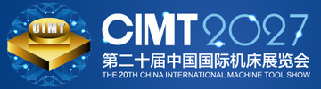
19–24 Apr 2027Dates expected
China International Machine Tool Show
China’s top machine-tool show, held only in odd years, for fabricators planning capex.
Beijing, China · China International Exhibition Center (Shunyi)
Sectors: Metal-cutting and forming machine tools, CNC, tooling
19–22 Apr 2027Dates expected
Foshan Uniceramics Expo (Tanzhou)
Foshan is China’s tile capital, and the fair falls between Canton Fair Phases 1 and 2.
Foshan, China · Tanzhou International Convention and Exhibition Center
Sectors: Ceramic tiles, slabs, sanitary ware, bathroom, ceramic machinery
2027 April 2027Dates expected
Global Sources Hong Kong Shows (April)
Export-ready suppliers next to Hong Kong airport, easy to combine with Canton Fair Phase 1.
Hong Kong, Hong Kong · AsiaWorld-Expo
Sectors: Consumer and mobile electronics, smart devices, lifestyle, gifts

20–23 Apr 2027Dates confirmed
HKTDC Hong Kong International Lighting Fair, Spring
Pairs with the Canton Fair Phase 1 lighting halls for lighting importers and electrical contractors.
Hong Kong, Hong Kong · HKCEC
Sectors: LED, decorative, commercial and smart lighting
20–23 Apr 2027Dates confirmed
FHA-Food & Beverage 2027
Southeast Asia's main F&B show, a short flight away, for food importers, supermarkets and restaurant groups.
Singapore, Singapore · Singapore Expo
Sectors: Food and beverage, specialty foods
2027 23 Apr–2 May 2027 (trade 25–26 Apr)Dates confirmed
Auto Shanghai 2027
The world’s largest auto show, essential for dealers and EV distributors scouting Chinese brands.
Shanghai, China · NECC Shanghai
Sectors: Passenger cars, NEVs, auto parts, smart mobility
25–28 Apr 2027Dates expected
China (Shenzhen) International Gifts and Home Products Fair
Overlaps Canton Fair Phase 2, a short train ride away, with more gift and home suppliers.
Shenzhen, China · Shenzhen World Exhibition & Convention Center
Sectors: Gifts, premiums, home decor, housewares, crafts
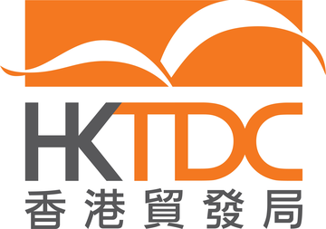
27–30 Apr 2027Dates confirmed
HKTDC Hong Kong Gifts & Premium Fair
Asia’s largest gifts fair, timed with Canton Fair Phase 2, for corporate-gift and promo suppliers.
Hong Kong, Hong Kong · HKCEC
Sectors: Gifts, premiums, corporate gifts, packaging

27–30 Apr 2027Dates expected
HKTDC Home InStyle
Runs alongside the Gifts Fair, so homeware and kitchenware buyers cover both in one visit.
Hong Kong, Hong Kong · HKCEC
Sectors: Housewares, kitchenware, home textiles, home decor
10–12 May 2027Dates confirmed
HOFEX 2027
Hotel and restaurant groups can source kitchen equipment, tableware and F&B products for Philippine hospitality projects.
Hong Kong, Hong Kong · Hong Kong Convention and Exhibition Centre
Sectors: Hotel and restaurant equipment, food and beverage
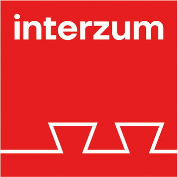
11–14 May 2027Dates confirmed
interzum 2027
Furniture makers and fit-out contractors can source hardware, panels and materials, and Philippine rattan and fibre suppliers can find buyers.
Cologne, Germany · Koelnmesse
Sectors: Furniture production, components, materials, interior fittings
12–14 May 2027Dates expected
CBE China Beauty Expo (31st)
Asia’s largest beauty trade fair, for brands sourcing OEM partners and packaging.
Shanghai, China · Shanghai New International Expo Centre
Sectors: Cosmetics, skincare, personal care, packaging, OEM/ODM
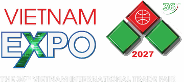
13–15 May 2027Dates confirmed
Vietnam Expo 2027 (36th Vietnam International Trade Fair)
A multi-sector way into Vietnamese suppliers and partners for importers looking at ASEAN sourcing.
Hanoi, Vietnam · Vietnam Exhibition Center (VEC), Dong Anh
Sectors: Multi-sector: industrial goods, consumer goods, food, electronics
15–15 May–Aug 2027Dates confirmed
Expo 2027 Belgrade (BIE Specialised Expo)
A BIE world expo with national pavilions and business forums, useful for networking with governments and trade delegations.
Belgrade, Serbia · Expo 2027 site, Surčin
Sectors: World expo: sport, music, culture, tech (theme 'Play for Humanity')
18–20 May 2027Dates expected
SIAL China
Asia’s largest food show, where Philippine coconut, mango, seafood and snack exporters meet Chinese importers.
Shanghai, China · Shanghai New International Expo Centre
Sectors: Food and beverage, imported foods, wine, dairy, snacks
2027 Around May 2027 (not yet announced)Dates expected
China-CEEC Expo & International Consumer Goods Fair
A Ningbo-port consumer goods platform; the 2027 edition follows the biennial pattern, so confirm first.
Ningbo, China · Ningbo International Convention & Exhibition Center
Sectors: Consumer goods, imported food and wine, home and lifestyle
20–22 May 2027Dates confirmed
IFEX Philippines 2027
The country's flagship food export show (CITEM/DTI), where local producers meet foreign buyers and local retailers find new suppliers.
Pasay (Metro Manila), Philippines · World Trade Center Metro Manila
Sectors: Food and ingredients, halal, export food
22–25 May 2027Dates confirmed
National Restaurant Association Show 2027
Restaurant groups and foodservice distributors can see kitchen equipment, QSR tech and US F&B brands to bring home.
Chicago, USA · McCormick Place
Sectors: Foodservice equipment, restaurant tech, F&B
25–27 May 2027Dates expected
ITB China
The travel trade show for agencies and DMCs meeting Chinese outbound buyers.
Shanghai, China · Shanghai World Expo Exhibition & Convention Center
Sectors: Outbound tourism, MICE, hotels, DMCs
25–26 May 2027Dates confirmed
PLMA World of Private Label 2027
Philippine food and personal-care makers can win private-label contracts with European supermarket chains.
Amsterdam, Netherlands · RAI Amsterdam
Sectors: Private-label food and non-food
25–29 May 2027Dates confirmed
THAIFEX – Anuga Asia 2027
One of Asia's largest F&B shows, a key sourcing and export stop for Philippine food importers, exporters and restaurant groups.
Bangkok, Thailand · IMPACT Muang Thong Thani
Sectors: Food and beverage, food tech, foodservice
1–4 Jun 2027Dates expected
COMPUTEX 2027
IT distributors, system integrators and electronics retailers can meet Taiwanese PC, component and AI-hardware makers.
Taipei, Taiwan · Taipei Nangang Exhibition Center & TWTC Hall 1
Sectors: Computing, AI hardware, components, IoT
8–11 Jun 2027Dates expected
Seoul Food 2027
K-food is in high demand in the Philippines, so importers and retailers can source Korean brands here.
Goyang (Seoul area), South Korea · KINTEX
Sectors: Food, beverage, hospitality equipment
9–12 Jun 2027Dates expected
Guangzhou International Lighting Exhibition (31st)
The world’s largest lighting show, for lighting importers, contractors and specifiers.
Guangzhou, China · Canton Fair Complex, Pazhou
Sectors: LED and architectural lighting, smart lighting, building technology
8–11 Jul 2027Dates expected
China (Guangzhou) International Building Decoration Fair
The main building materials fair for developers, contractors and fit-out firms.
Guangzhou, China · Canton Fair Complex, Pazhou
Sectors: Doors, windows, cabinetry, flooring, sanitary, smart home
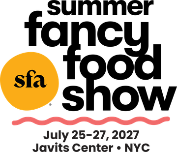
25–27 Jul 2027Dates confirmed
Summer Fancy Food Show 2027
Philippine specialty-food exporters (snacks, sauces, coconut products) can reach US specialty retailers and distributors.
New York, USA · Jacob K. Javits Convention Center
Sectors: Specialty food and beverage

12–16 Aug 2027Dates confirmed
HKTDC Food Expo
A trade and consumer food show to test the Hong Kong and Greater Bay Area market.
Hong Kong, Hong Kong · HKCEC
Sectors: Food and beverage, gourmet, tea (trade and public halls)
3–7 Sep 2027Dates confirmed
IFA Berlin 2027
Appliance and electronics distributors can see the year's new lines and meet brands looking for Southeast Asian partners.
Berlin, Germany · Messe Berlin
Sectors: Consumer electronics, home appliances
7–12 Sep 2027Dates confirmed
IAA MOBILITY 2027
Auto dealers, EV distributors and parts suppliers can track EV and mobility trends and meet OEMs and suppliers.
Munich, Germany · Messe München & Munich city centre
Sectors: Automotive, EVs, mobility tech
8–11 Sep 2027Dates expected
China International Fair for Investment and Trade
China’s main investment fair, for firms and LGUs seeking Chinese investors or JV partners.
Xiamen, China · Xiamen International Conference and Exhibition Center
Sectors: Two-way investment, industrial parks, project roadshows
8–10 Sep 2027Dates expected
China International Optoelectronic Exposition
For electronics and EMS manufacturers sourcing optoelectronic components.
Shenzhen, China · Shenzhen World Exhibition & Convention Center
Sectors: Optics, lasers, photonics, displays, sensors
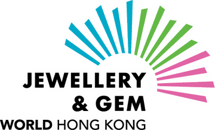
14–20 Sep 2027Dates expected
Jewellery & Gem WORLD Hong Kong
The world’s largest jewellery fair for raw materials, for jewellers and pearl traders.
Hong Kong, Hong Kong · AsiaWorld-Expo and HKCEC
Sectors: Loose gems, pearls, diamonds, finished jewellery
19–22 Sep 2027Dates confirmed
Big 5 Construct Saudi 2027
Philippine contractors and building-materials suppliers can tap Saudi giga-projects, where Filipino workers are already a big part of the workforce.
Riyadh, Saudi Arabia · Riyadh Front Exhibition & Conference Center
Sectors: Construction, building materials, MEP
2027 Second week of September 2027Dates expected
Furniture China (32nd)
Shanghai’s export furniture fair, for buyers who miss CIFF Guangzhou in March.
Shanghai, China · Shanghai New International Expo Centre
Sectors: Home and office furniture, materials (with Maison Shanghai)
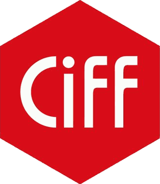
2027 Early September 2027Dates expected
China International Furniture Fair (Shanghai)
The autumn CIFF, often combined with Furniture China in the same week.
Shanghai, China · NECC Shanghai
Sectors: Home and office furniture, outdoor, decor
2027 Early–mid September 2027Dates expected
China International Fair for Trade in Services
China’s flagship services fair, relevant to BPO, tourism and services exporters.
Beijing, China · Shougang Park
Sectors: Digital, finance, tourism, logistics, education, health services
2027 September 2027Dates expected
China-ASEAN Expo (24th)
The Philippines has a national pavilion here: the most direct China platform for Philippine exporters.
Nanning, China · Nanning International Convention and Exhibition Center
Sectors: Agri-food, consumer goods, machinery, digital, investment
2027 September–October 2027Dates expected
China International Industry Fair
China’s leading industrial fair, for manufacturers sourcing automation and robotics.
Shanghai, China · NECC Shanghai
Sectors: Industrial automation, robotics, CNC, energy, new materials
Sep dates TBCDates expected
MIHAS 2027 – Malaysia International Halal Showcase
The world's largest halal show, a gateway for Mindanao and other Philippine halal-food producers to global halal buyers.
Kuala Lumpur, Malaysia · MITEC
Sectors: Halal food, cosmetics, pharma, services
9–13 Oct 2027Dates confirmed
Anuga 2027
The world's largest F&B fair, essential for Philippine food exporters seeking EU and global buyers and for importers sourcing new products.
Cologne, Germany · Koelnmesse
Sectors: Food and beverage (all categories)
2027 15–19 Oct · 23–27 Oct · 31 Oct–4 Nov 2027Dates expected
142nd China Import and Export Fair (Autumn Canton Fair)
The second Canton Fair of 2027, timed for next year’s orders and Christmas reorders.
Guangzhou, China · Canton Fair Complex, Pazhou
Sectors: Industrial and electronics · home and building · consumer goods and fashion
2027 October 2027Dates expected
HKTDC Electronics Fair and Lighting Fair, Autumn
Lines up with autumn Canton Fair Phase 1 for a Hong Kong and Guangzhou itinerary.
Hong Kong, Hong Kong · HKCEC
Sectors: Consumer electronics, smart devices; LED and decorative lighting
2027 October 2027Dates expected
Global Sources Hong Kong Shows (October)
Electronics and mobile-accessory sourcing that fits around the autumn Canton Fair.
Hong Kong, Hong Kong · AsiaWorld-Expo
Sectors: Consumer and mobile electronics, AI devices, lifestyle, gifts
2027 Late October 2027Dates expected
China Yiwu International Commodities Fair (33rd)
The gateway to Yiwu’s wholesale market, ideal for bazaar, sari-sari supply and online sellers.
Yiwu, China · Yiwu International Expo Center
Sectors: Hardware, daily goods, stationery, toys, crafts, accessories
2027 Late Oct–early Nov 2027Dates expected
China International Fisheries Expo
Asia’s largest seafood show, for tuna, shrimp and seaweed exporters meeting Chinese buyers.
Qingdao, China · Hongdao International Convention and Exhibition Center
Sectors: Seafood, aquaculture, processing equipment, cold chain
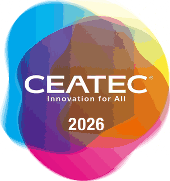
Oct dates TBCDates expected
CEATEC 2027
Electronics and IT companies can meet Japanese tech firms and component makers, many of which run plants in the Philippines.
Chiba (Tokyo area), Japan · Makuhari Messe
Sectors: Electronics, IT, digital innovation
Oct dates TBCDates expected
Manila FAME 2027
The country's premier design and lifestyle export show (CITEM/DTI), where Philippine makers meet foreign and local retail buyers.
Pasay (Metro Manila), Philippines · World Trade Center Metro Manila
Sectors: Home furnishings, fashion, handicrafts, gifts
22–26 Oct 2027Dates confirmed
HostMilano 2027
Hotel, café and restaurant operators can source professional kitchen, coffee and bakery equipment for Philippine HoReCa growth.
Milan, Italy · Fiera Milano Rho
Sectors: Foodservice equipment, coffee, bakery, hospitality
30–9 Oct–Nov 2027Dates expected
Japan Mobility Show 2027
Japanese brands dominate Philippine car and motorcycle sales, so dealers and parts distributors can see upcoming models and suppliers.
Tokyo, Japan · Tokyo Big Sight
Sectors: Automotive, motorcycles, EVs, mobility
14–20 Nov 2027Dates confirmed
Agritechnica 2027
Agri-machinery distributors and large farms and plantations can source tractors, harvesters and precision-farming tech.
Hannover, Germany · Hannover Exhibition Grounds
Sectors: Agricultural machinery and technology
2027 Early November 2027 (5–10 Nov pattern)Dates expected
China International Import Expo (10th)
The world’s largest import fair, and the top platform for Philippine exporters selling into China.
Shanghai, China · NECC Shanghai
Sectors: Import-only: food and agri, consumer goods, medical, autos, tech
2027 Mid-November 2027Dates expected
FHC Shanghai Global Food Trade Show
An import-focused food show that pairs neatly with CIIE.
Shanghai, China · Shanghai New International Expo Centre
Sectors: Imported food and beverage, wine, hospitality, bakery
2027 November 2027Dates expected
China Hi-Tech Fair
China’s top tech fair, for tech firms and buyers scouting Shenzhen innovation.
Shenzhen, China · Shenzhen World Exhibition & Convention Center
Sectors: AI, semiconductors, robotics, new energy, smart city
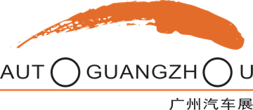
2027 Late November 2027Dates expected
Guangzhou International Automobile Exhibition
South China’s year-end auto show, for dealers sourcing Chinese EV and car brands.
Guangzhou, China · Canton Fair Complex, Pazhou
Sectors: Passenger vehicles, NEVs, auto tech
Nov dates TBCDates expected
EICMA 2027
The Philippines is a major motorcycle market, so dealers and accessory distributors can meet brands and suppliers here.
Milan, Italy · Fiera Milano Rho
Sectors: Motorcycles, e-bikes, accessories
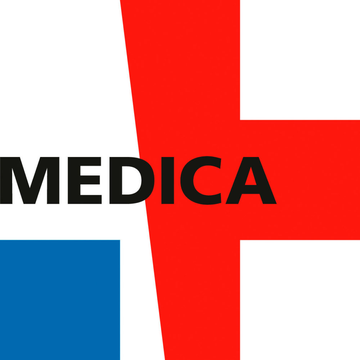
Nov dates TBCDates expected
MEDICA 2027
The world's largest medical trade fair, for Philippine hospital groups and medical distributors sourcing equipment.
Düsseldorf, Germany · Messe Düsseldorf
Sectors: Medical technology, hospital equipment, diagnostics
Nov dates TBCDates expected
METALEX 2027
ASEAN's main machine-tool show, for Philippine fabricators, manufacturers and machinery distributors.
Bangkok, Thailand · BITEC
Sectors: Machine tools, metalworking, automation
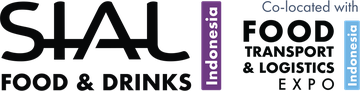
Nov dates TBCDates expected
SIAL InterFOOD Indonesia 2027
A way into Indonesia's huge food market and its regional suppliers for Philippine food exporters and processors.
Jakarta, Indonesia · JIExpo Kemayoran
Sectors: Food, beverage, food processing, hospitality
Nov dates TBCDates expected
Big 5 Global 2027
The Middle East's largest construction show, where Philippine contractors and building-materials buyers can source and find Gulf project work.
Dubai, UAE · Dubai World Trade Centre
Sectors: Construction, building materials, MEP, interiors
Nov dates TBCDates expected
Automechanika Dubai 2027
Auto-parts importers and repair-shop chains can source aftermarket parts and workshop equipment from global suppliers.
Dubai, UAE · Dubai Exhibition Centre, Expo City Dubai
Sectors: Auto parts, aftermarket, workshop equipment
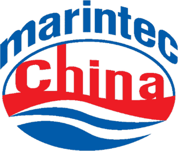
2027 30 Nov–3 Dec 2027Dates expected
Marintec China
Asia’s largest maritime show, odd years only, for shipyards and marine suppliers.
Shanghai, China · Shanghai New International Expo Centre
Sectors: Shipbuilding, marine equipment, offshore, port technology
No expos match these filters.
Clear a filter, or tell us the show and we will plan the trip anyway.
About these dates. "Dates confirmed" means we checked the organiser's own website. "Dates expected" follows the show's usual pattern and may move. We re-check every date before booking. Your show is not listed? We plan trips to any trade fair.
Found your show?
Send us the expo, your headcount and dates. We handle registration, flights, hotels and visas.